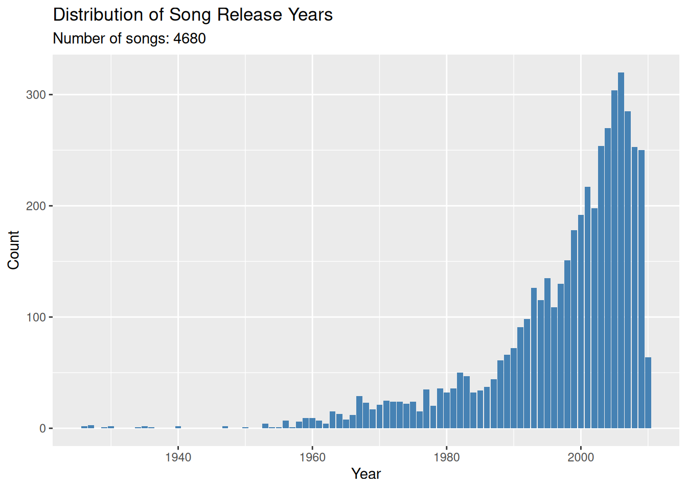
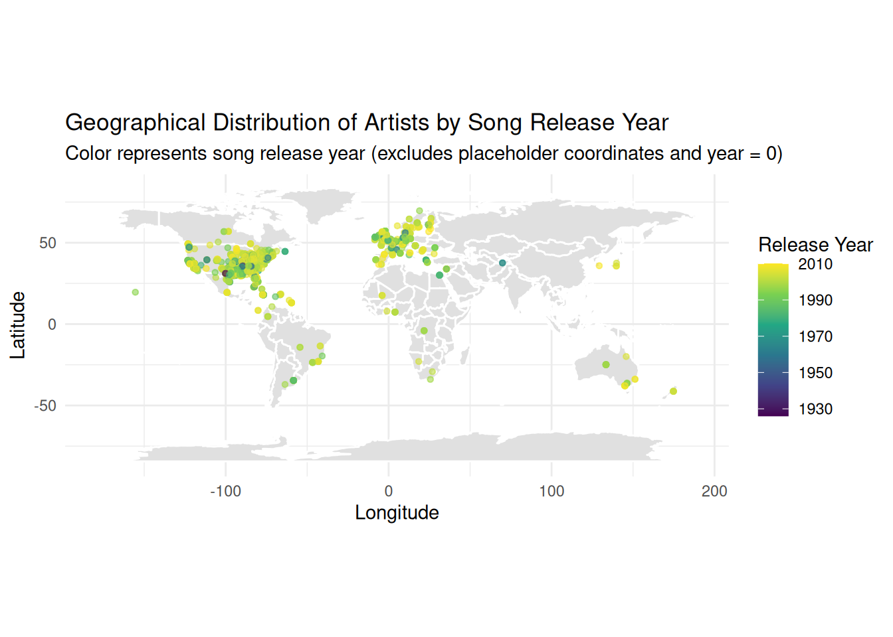

Rows: 10,000
Columns: 10
$ artist.familiarity <dbl> 0.58179377, 0.63063004, 0.48735679, 0.63038233, 0.6…
$ artist.hotttnesss <dbl> 0.4019975, 0.4174996, 0.3434284, 0.4542312, 0.40172…
$ artist.id <chr> "ARD7TVE1187B99BFB1", "ARMJAGH1187FB546F3", "ARKRRT…
$ artist.latitude <dbl> 0.00000, 35.14968, 0.00000, 0.00000, 0.00000, 0.000…
$ artist.location <dbl> 0, 0, 0, 0, 0, 0, 0, 0, 0, 0, 0, 0, 0, 0, 0, 0, 0, …
$ artist.longitude <dbl> 0.00000, -90.04892, 0.00000, 0.00000, 0.00000, 0.00…
$ artist.name <chr> "Casual", "The Box Tops", "Sonora Santanera", "Adam…
$ artist.similar <dbl> 0, 0, 0, 0, 0, 0, 0, 0, 0, 0, 0, 0, 0, 0, 0, 0, 0, …
$ artist.terms <chr> "hip hop", "blue-eyed soul", "salsa", "pop rock", "…
$ artist.terms_freq <dbl> 1.0000000, 1.0000000, 1.0000000, 0.9885839, 0.88728…Million Song Dataset
Artist familiarity is an algorithmic estimation (scaled 0 to 1) of how well-known an artist is to listeners. Artist hotttnesss measures the artist’s current popularity or “buzz” at the time of data collection on a similar 0 to 1 scale. Both metrics were generated by The Echo Nest.

# A tibble: 4 × 6
variable min q25 median q75 max
<chr> <dbl> <dbl> <dbl> <dbl> <dbl>
1 artist.familiarity 0 0.468 0.564 0.668 1
2 artist.hotttnesss 0 0.325 0.381 0.454 1.08
3 song.tempo 0 97.0 120. 144. 263.
4 song.year 0 0 0 2000 2010 # A tibble: 6 × 2
column placeholders
<chr> <int>
1 artist.familiarity 24
2 artist.hotttnesss 496
3 artist.location 9999
4 release.name 9989
5 song.title 9992
6 song.year 5320Many artists are missing actual geographical coordinates, with their latitude and longitude set to a placeholder of 0.
# A tibble: 2 × 2
coordinate_type n
<chr> <int>
1 placeholder 2493
2 usable 1418Because more than 60% of the artists in the dataset lack valid geographical coordinates, the world map below only represents the subset of artists with usable location data.
